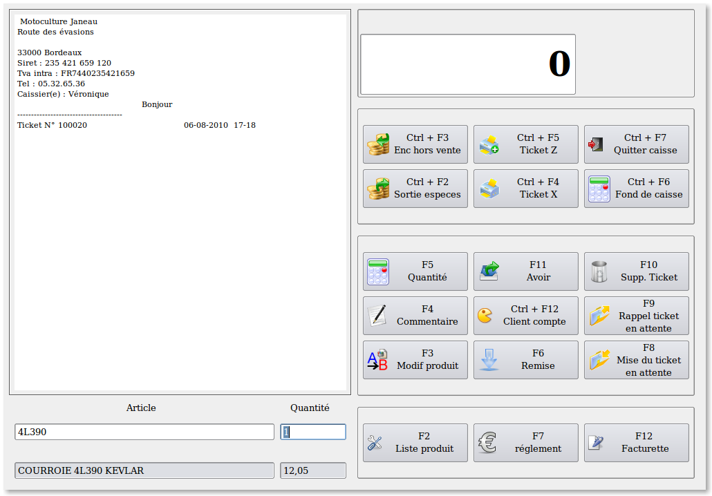
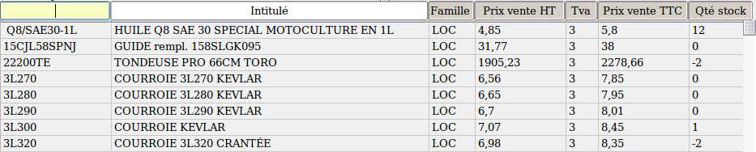
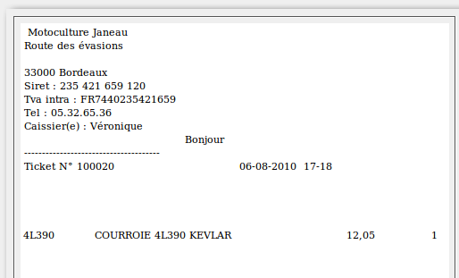
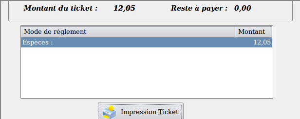

~ Laurux.Pos ~

~ Laurux.Pos ~ |
|
|
|
Saisie d'un ticket simple.

Lorsqu'on commence la saisie d' un ticket, la zone du ticket (à gauche) affiche l'entête de la société, le numéro du ticket, la date et l'heure. Le curseur se trouve dans la zone "Article".
Il y a trois façons de saisir un code produit. Manuellement , en le saisissant si on le connait ou en faisant F2 pour ouvrir la fenêtre de recherche ou alors à l'aide d'un lecteur optique si le produit possède un code barre.
1- Saisie manuelle du code. On tape le code puis après la validation on saisie la quantité si elle est différente de 1 ou on valide puisque la quantité proposée par le logiciel est égale à 1.
2- Recherche d'un produit. On fait F2 pour ouvrir la fenêtre de recherche et on selectionne le produit souhaité.


Le montant proposé par le programme est le montant du reste à payer. Si le mode de règlement est unique alors il suffit de valider.
NB: Si il y a une erreur sur le mode de règlement il suffit d'en choisir un autre.

La ligne de règlement se trouve dans la zone des règlements enregistrés, le montant du reste à payer est égal à zéro, on peut donc valider pour imprimer le ticket.
NB: Le programme n'imprimera le ticket que si le montant du reste à payer est égal à zéro.
----------------------------------------------------------------------------------------------------------------------
En cas d'erreur, on contrepasse le produit avec une quantité négative
----------------------------------------------------------------------------------------------------------------------